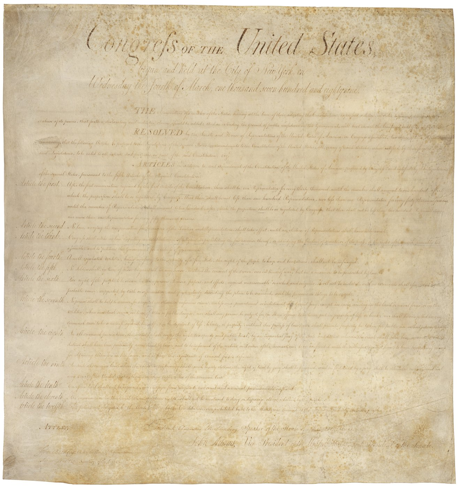

Optima Academy Online
An Education Experience Company
M/J CIVICS
Quarter / Module
Q2 · Module 4
Civil Liberties & Rights
Primary Source
4.4 Source 1
Author & Work
U.S. Congress, Preamble to the Bill of Rights & First Amendment
Pairs With
4.2 Lesson · 4.5 Critical Questions (Canvas)
4.4 Primary Source 1
Preamble to the Bill of Rights & First Amendment (1791)
Read this, then complete 4.5 Critical Questions in Canvas.
📖 CONTEXT
This is the Preamble the states received alongside the ten amendments Congress proposed in 1789, plus the text of the First Amendment itself. Read the Preamble's stated purpose carefully before the amendment: it explains why the amendments exist at all, and sets up the "fence, not a grant" idea from Lesson 12.1.

📜 THE TEXT
“THE Conventions of a number of the States, having at the time of their adopting the Constitution, expressed a desire, in order to prevent misconstruction or abuse of its powers, that further declaratory and restrictive clauses should be added: And as extending the ground of public confidence in the Government, will best ensure the beneficent ends of its institution… RESOLVED… that the following Articles be proposed to the Legislatures of the several States, as amendments to the Constitution of the United States… Amendment I. Congress shall make no law respecting an establishment of religion, or prohibiting the free exercise thereof; or abridging the freedom of speech, or of the press; or the right of the people peaceably to assemble, and to petition the Government for a redress of grievances.”
(Text of the 1789 joint resolution and First Amendment, as ratified 1791.)
💡 A NOTE ON THE TEXT
The capitalization above (Government, Constitution, Articles) preserves the style of the original 1789 enrolled resolution rather than modern convention. This is not a translation from another language, but it is worth reading the way you would read any older legal document: slowly, and with attention to what the framers actually chose to say rather than to what popular memory has flattened it into.
➡️ WHAT YOU'LL DO NEXT
1
4.5 Critical Questions (Canvas)
Reread the excerpt above, including the note on the text, before answering the two questions in Canvas.
Optima Academy Online · M/J CIVICS · Quarter 2 · Primary Source Page
Week 12 · Preamble to the Bill of Rights & First Amendment
© Optima Academy Online · An Education Experience Company